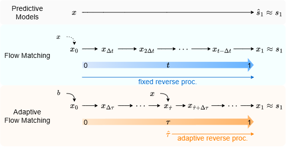

Abstract
Generative target speaker extraction (TSE) methods often produce more natural outputs than predictive models. Recent work based on diffusion or flow matching (FM) typically relies on a small, fixed number of reverse steps with a fixed step size. We introduce Adaptive Discriminative Flow Matching TSE (AD-FlowTSE), which extracts the target speech using an adaptive step size. We formulate TSE within the FM paradigm but, unlike prior FM-based speech enhancement and TSE approaches that transport between the mixture (or a normal prior) and the clean-speech distribution, we define the flow between the background and the source, governed by the mixing ratio (MR) of the source and background that creates the mixture. This design enables MR-aware initialization, that the model starts at an adaptive point along the background–source trajectory rather than applying the same reverse schedule across all noise levels. Experiments show that AD-FlowTSE achieves strong TSE with as few as a single step, and that incorporating auxiliary MR estimation further improves target speech accuracy. Together, these results highlight that aligning the transport path with the mixture composition and adapting the step size to noise conditions yields efficient and accurate TSE.
